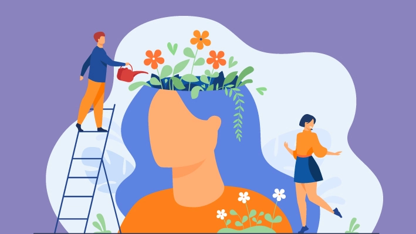
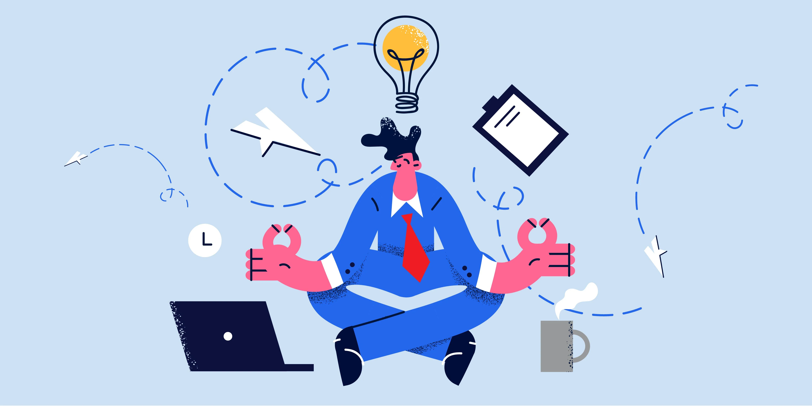
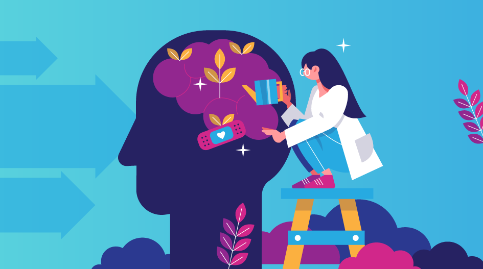
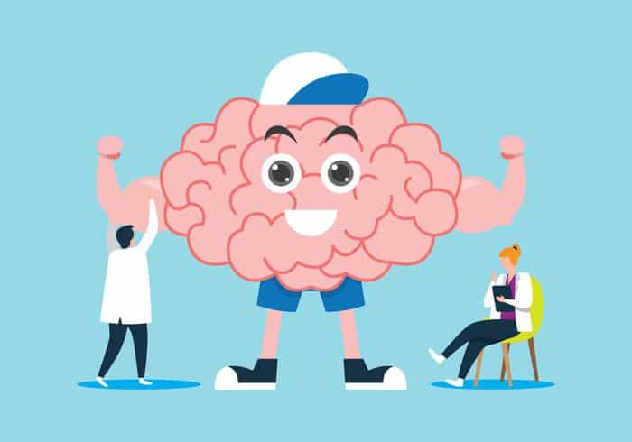

Sobre Nosotros
Somos un equipo de profesionales dedicados a promover el bienestar emocional y la salud mental. En nuestro blog, encontrarás artículos informativos, consejos prácticos y recursos útiles para ayudarte a mejorar tu calidad de vida y alcanzar un estado de bienestar óptimo.
Nuestros Artículos
Explora nuestra amplia variedad de artículos sobre temas relacionados con el bienestar y la salud mental. Desde técnicas de manejo del estrés hasta consejos para mejorar la autoestima, estamos aquí para guiarte en tu viaje hacia una vida más feliz y plena.
Recursos Gratuitos
Descarga nuestros recursos gratuitos, como guías de meditación, libros electrónicos sobre mindfulness y hojas de trabajo para el desarrollo personal. Estamos comprometidos a proporcionarte herramientas prácticas que puedan ayudarte a cultivar una mentalidad positiva y resiliente.

Únete a Nuestra Comunidad
Conéctate con otras personas que comparten tus intereses y metas de bienestar. Únete a nuestra comunidad en línea para participar en discusiones, compartir tus experiencias y recibir apoyo mutuo en tu viaje hacia el bienestar emocional.
Nuestro Compromiso
En el Blog de Bienestar y Salud Mental, estamos comprometidos a ofrecerte contenido de alta calidad que pueda inspirarte, educarte y motivarte en tu búsqueda de una vida más saludable y satisfactoria. ¡Únete a nosotros en este emocionante viaje hacia el bienestar!
¡Suscríbete a Nuestro Boletín!
No te pierdas ninguna actualización. Suscríbete a nuestro boletín para recibir las últimas noticias, consejos y recursos directamente en tu bandeja de entrada. ¡Únete a nuestra comunidad de bienestar hoy mismo!